Texto extraído da edição fornecida, sem atualização normativa. Consulte a página original para conferir tabelas, formulários e instruções ilustradas. A numeração dos links corresponde à página do arquivo PDF.
Apresentação
PDF · p. 1ADICIONAL DE INSALUBRIDADE ADICIONAL DE
PERICULOSIDADE
DAP-06.012
Legislação básica
PDF · p. 21. LEGISLAÇÃO BÁSICA
É dever do servidor, da Organização Militar (OM) e da Região Militar (RM) ler e
acompanhar a atualização da legislação que se refere aos assuntos tratados neste
Caderno de Orientação.
Referência de legislação:
2
Lei 8.112, de 11 de dezembro de 1990
Lei nº 8.270, de 17 de dezembro de 1991
Decreto-Lei nº 5.452, de 1º de maio de
1943 - CLT
Decreto-Lei nº 1.873, de 27 de maio de
1981.
Decreto nº 97.458, de 11 de janeiro de
1989
Norma Regulamentadora No. 15 (NR-15)
Norma Regulamentadora No. 16 (NR-16)
Portaria SGP/SEDGG/MEnº 10.360, de 6
de dezembro de 2022
Instrução Normativa SGP/SEGGG/MEnº
15, de 16 de março 2022
Ver página original — tabelas, imagens e diagramas
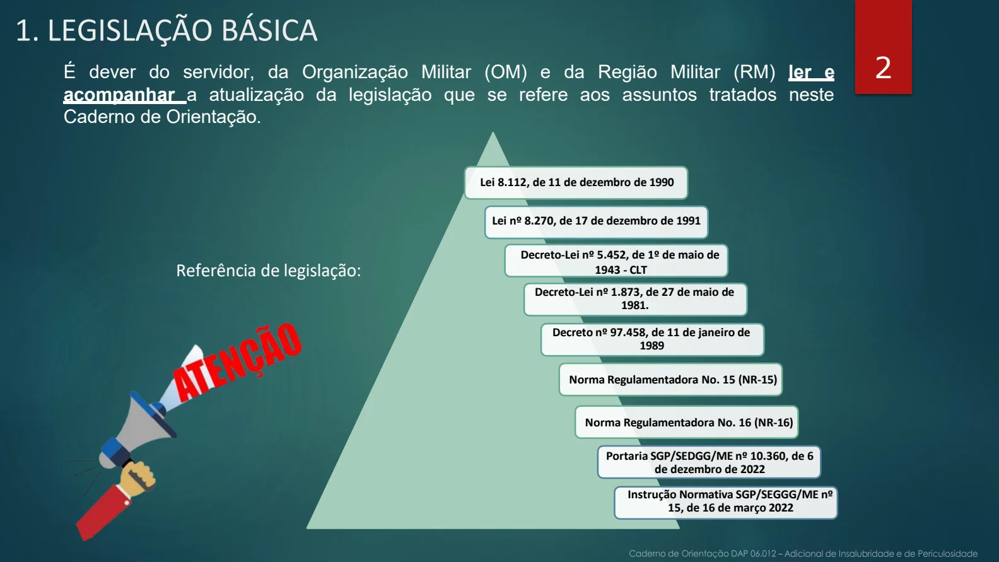
Conceitos
PDF · p. 332. CONCEITOS
.
2.1. INSALUBRIDADE:
Serão consideradas atividades ou operações insalubres aquelas que, por sua natureza, condições ou métodos
de trabalho, exponham os servidores a agentes nocivos à saúde, acima dos limites de tolerância fixados em
razão da natureza e da intensidade do agente e do tempo de exposição aos seus efeitos.
2.2. PERICULOSIDADE:
São consideradas atividades ou operações perigosas, na forma da
regulamentação vigente, aquelas que, por sua natureza ou métodos de
trabalho, impliquem risco acentuado em virtude de exposição permanente do
servidor a:
a) inflamáveis, explosivos ou energia elétrica;
b) roubos ou outras espécies de violência física nas atividades profissionais de
segurança pessoal ou patrimonial.
Ver página original — tabelas, imagens e diagramas
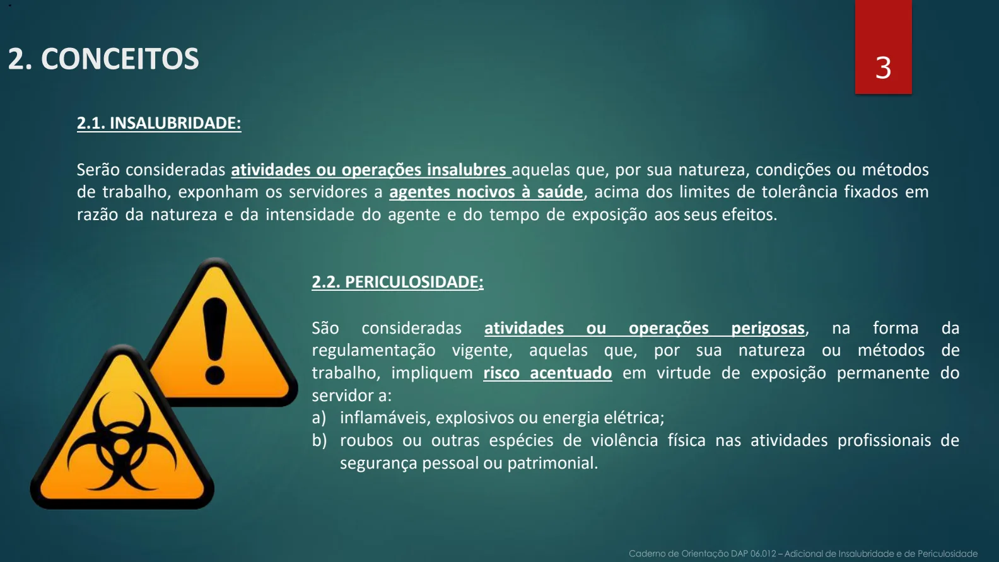
Conceitos
PDF · p. 42. CONCEITOS
2.3. CONCEITOS RELACIONADOS AO TEMA:
.
a) Exposição eventual ou esporádica: aquela em que o servidor se submete a circunstâncias ou
condições insalubres ou perigosas, como atribuição legal do seu cargo, por tempo inferior à metade
da jornada de trabalho mensal.
b) Exposição habitual: aquela em que o servidor se submete a circunstâncias ou condições insalubres ou perigosas
por tempo igual ou superior à metade da jornada de trabalho mensal.
c) Exposição permanente: aquela que é constante, durante toda a jornada laboral.
Observação: No caso de o servidor estar submetido a condições insalubres ou perigosas em período
de tempo que não configure exposição habitual, nos termos do item “b” deste tópico, mas em período de
tempo que configure o direito ao adicional conforme os Anexos e Tabelas das Normas
Regulamentadoras (NR) nº 15* e nº 16, aprovadas pela Portaria MTE nº 3.214, de 8 de junho de 1978,
prevalecerá o direito ao recebimento do respectivo adicional.
Para acessar a NR 15*, clique no link:https://www.gov.br/trabalho-e-emprego/pt-br/acesso-a-
informacao/participacao-social/conselhos-e-orgaos-colegiados/comissao-tripartite-partitaria-
permanente/normas-regulamentadora/normas-regulamentadoras-vigentes/norma-regulamentadora-no-
15-nr-15
Para acessar a NR 16, click no link: https://www.gov.br/trabalho-e-emprego/pt-br/acesso-a-
informacao/participacao-social/conselhos-e-orgaos-colegiados/comissao-tripartite-partitaria-
permanente/normas-regulamentadora/normas-regulamentadoras-vigentes/norma-regulamentadora-no-
16-nr-16
*O texto da NR-15 sofreu diversas alterações pontuais ao longo de mais de 40 anos de vigência. Suas alterações estão disponíveis no link
supramencionado.
Ver página original — tabelas, imagens e diagramas
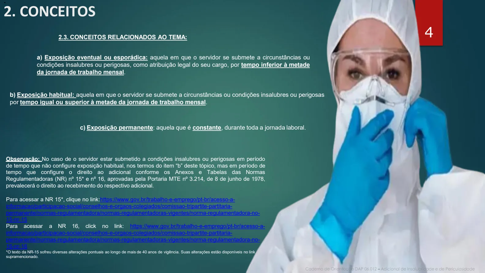
Requisitos básicos
PDF · p. 53. REQUISITOS BÁSICOS
.
Laudo técnico pericial elaborado por
servidor público da esfera federal,
estadual, distrital ou municipal, ou
militar, ocupante de cargo público ou
posto militar de médico com
especialização em medicina do trabalho,
ou de engenheiro ou de arquiteto com
especialização em segurança do
trabalho.
Estar sujeito a uma exposição
permanente a circunstâncias
ou condições insalubres ou
perigosas
Observação às atividades e
às condições estabelecidas nas NR
nº 15 e 16, aprovadas pela
Portaria MTE nº 3.214, de 8 de
junho de 1978 e suas respectivas
alterações.Publicação de portaria de localização
ou de exercício do servidor e de
portaria de concessão do adicional
Ver página original — tabelas, imagens e diagramas
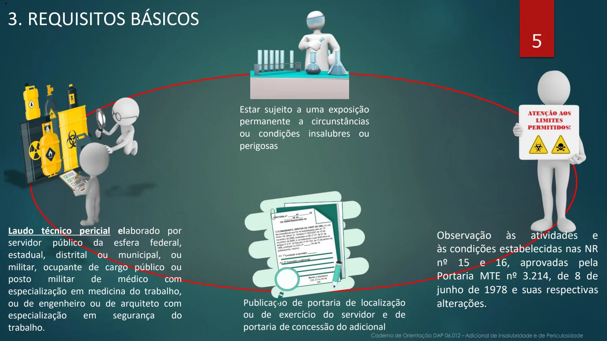
Informações gerais
PDF · p. 64. INFORMAÇÕES GERAIS
4.1. A caracterização da insalubridade e da periculosidade nos locais de trabalho respeitará as normas
estabelecidas para os trabalhadores em geral, de acordo com as instruções contidas nos normativos publicados
pelo órgão central do SIPEC, observada a legislação vigente.
4.2. Os adicionais de insalubridade, de periculosidade e de irradiação ionizante, bem como a gratificação por trabalhos
com raios-x ou substâncias radioativas, estabelecidos na legislação vigente, não se acumulam, tendo caráter transitório,
enquanto durar a exposição.
4.3. Em se tratando de concessão de adicional de insalubridade em decorrência de exposição permanente a agentes
biológicos, serão observadas as atividades e as condições estabelecidas na NR nº 15, aprovada pela Portaria MTE nº
3.214, de 1978.
4.4. A caracterização e a classificação da insalubridade ou periculosidade para os servidores da administração federal
direta, autárquica e fundacional será feita nas condições disciplinadas na legislação trabalhista.
4.5. A concessão dos adicionais será feita pela autoridade que determinar a localização ou o exercício do servidor no
órgão ou atividade periciada.
4.6. Incorrem em responsabilidade administrativa, civil e penal os peritos e dirigentes que concederem ou
autorizarem o pagamento dos adicionais em desacordo com a legislação vigente.
4.7. Cabe à OM realizar a atualização permanente dos servidores que fazem jus aos adicionais no respectivo módulo
informatizado oficial do órgão central do SIPEC, conforme movimentação de pessoal, sendo, também, de sua
responsabilidade, proceder a suspensão do pagamento, mediante comunicação oficial ao servidor interessado.
Ver página original — tabelas, imagens e diagramas
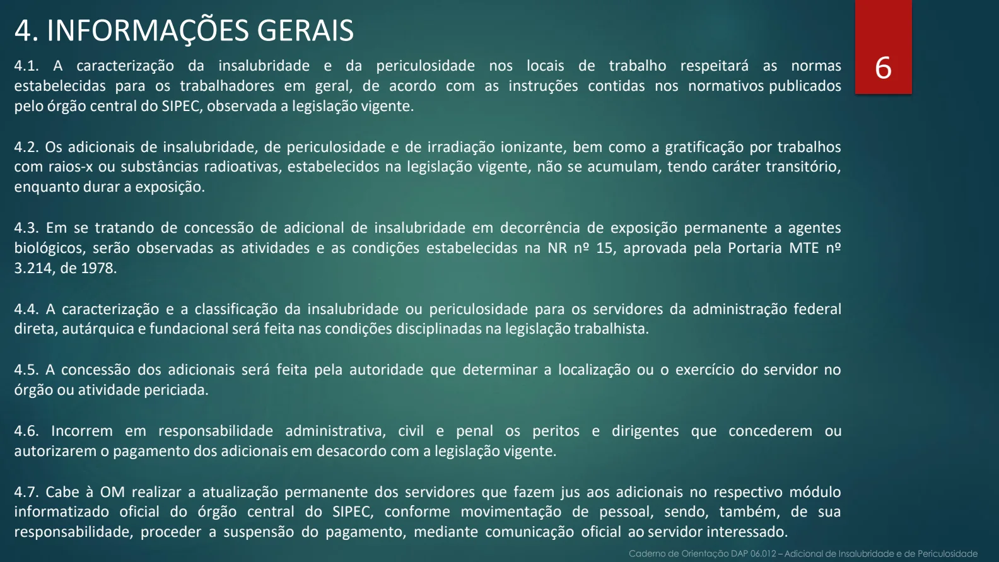
Informações gerais
PDF · p. 74. INFORMAÇÕES GERAIS (cont.)
4.9. NÃO CARACTERIZAM situação para pagamento do
adicional de insalubridade em decorrência de exposição
permanente a agentes biológicos:
a) o contato com fungos, ácaros, bactérias e
outros microorganismos presentes em documentos, livros,
processos e similares, carpetes, cortinas e similares,
sistemas de condicionamento de ar ou instalações
sanitárias;
b) as atividades em que o servidor somente mantenha
contato com pacientes em área de convivência e
circulação, ainda que o servidor permaneça nesses locais;
e
c) as atividades em que o servidor manuseie objetos que
não se enquadrem como veiculadores de secreções do
paciente, ainda que sejam prontuários, receitas, vidros
de remédio, recipientes fechados para exame de
laboratório e documentos em geral.
4.8. NÃO GERAM DIREITO aos adicionais de insalubridade e
periculosidade as atividades :
a) em que a exposição a circunstâncias ou condições
insalubres ou perigosas seja eventual ou esporádica;
b) consideradas como atividades-meio ou de suporte, em que
não há obrigatoriedade e habitualidade do
contato;
c) que são realizadas em local inadequado, em virtude de
questões gerenciais ou por problemas
organizacionais de outra ordem; e
d) em que o servidor ocupe função de chefia ou
direção, com atribuição de comando
administrativo, exceto quando respaldado por laudo
técnico pericial individual que comprove a exposição em
caráter habitual ou permanente.
e) realizadas por servidores distantes do local de
exposição ou que deixem de exercer o tipo de trabalho que
deu origem ao pagamento do adicional
Ver página original — tabelas, imagens e diagramas
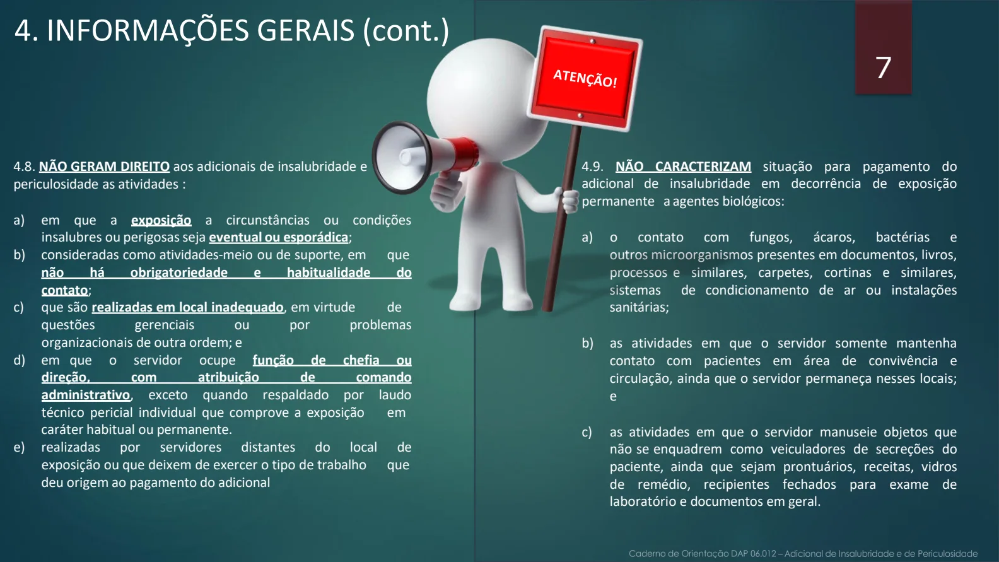
Informações gerais
PDF · p. 84. INFORMAÇÕES GERAIS (cont.)
4.10. O pagamento dos adicionais de insalubridade e de periculosidade será suspenso quando cessar o risco ou quando
o servidor for afastado do local ou da atividade que deu origem à concessão.
CASAMENTO
FÉRIAS
FALECIMENTO DO CÔNJUGE,
COMPANHEIRO, PAIS, MADRASTA OU
PADRASTO, FILHOS, ENTEADOS, MENOR
SOB GUARDA OU TUTELA E IRMÃOS
LICENÇA À GESTANTE, À
ADOTANTE E À
PATERNIDADE
LICENÇAS PARA TRATAMENTO
DAPRÓPRIA SAÚDE OU
EM DECORRÊNCIA DE ACIDENTE EM
SERVIÇO
4.11. A suspensão supramencionada NÃO É APLICADA às hipóteses de afastamentos ocorridos em virtude de:
Laudo técnico pericial
PDF · p. 95.1. A caracterização e a justificativa para concessão de adicionais de insalubridade e periculosidade, quando
houver exposição permanente ou habitual a agentes físicos, químicos ou biológicos, dar-se-ão por meio de laudo
técnico pericial elaborado nos termos das NR nº 15 e nº 16, aprovadas pela Portaria MTE nº 3.214, de 1978.
5.2. No caso do servidor estar submetido a condições insalubres ou
perigosas em período de tempo que não configure exposição habitual, mas
em período de tempo que configure o direito ao adicional conforme os
Anexos e Tabelas das Normas Regulamentadoras (NR) nº 15 e nº 16,
aprovadas pela Portaria MTE nº 3.214, de 8 de junho de 1978, prevalecerá
o direito ao recebimento do respectivo adicional.
5. DO LAUDO TÉCNICO PERICIAL
Ver página original — tabelas, imagens e diagramas
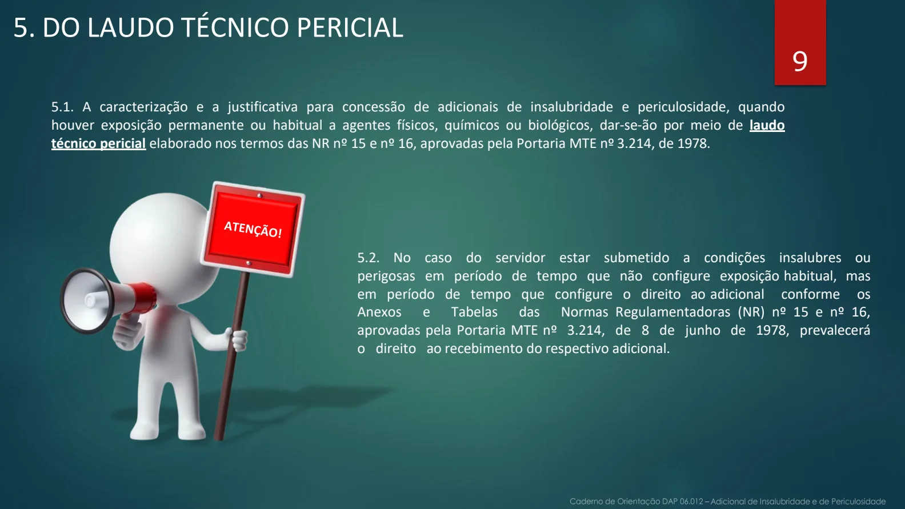
Laudo técnico pericial
PDF · p. 105.3. O laudo técnico pericial deverá:
• ser elaborado por servidor público da esfera federal, estadual, distrital ou municipal, ou militar, ocupante de cargo público ou posto
militar de médico com especialização em medicina do trabalho, ou de engenheiro ou de arquiteto com especialização em segurança do
trabalho;
• referir-se ao ambiente de trabalho e considerar a situação individual de trabalho do servidor;
• identificar:
a) o local de exercício ou o tipo de trabalho realizado;
b) o agente nocivo à saúde ou o identificador do risco;
c) o grau de agressividade ao homem, especificando:
1. limite de tolerância conhecida, quanto ao tempo de exposição ao agente nocivo; e
2. verificação do tempo de exposição do servidor aos agentes agressivos;
d) classificação dos graus de insalubridade e de periculosidade, com os respectivos percentuais aplicáveis ao local ou
atividade examinados; e
e) as medidas corretivas necessárias para eliminar ou neutralizar o risco, ou proteger contra seus efeitos.
5. DO LAUDO TÉCNICO PERICIAL (cont.)
Ver página original — tabelas, imagens e diagramas
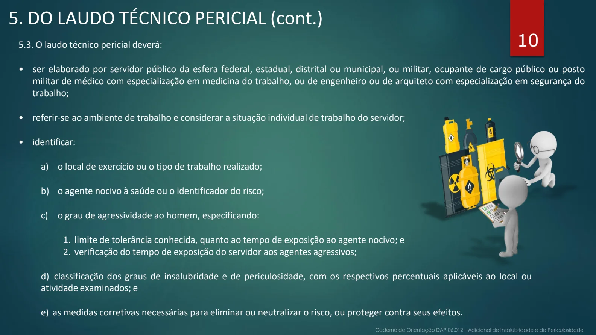
Laudo técnico pericial
PDF · p. 115. DO LAUDO TÉCNICO PERICIAL (cont.)
5.4. O laudo técnico pericial não terá prazo de validade, devendo ser refeito sempre que
houver alteração do ambiente ou dos processos de trabalho ou da legislação vigente.
5.5 Compete ao profissional responsável pela emissão do laudo técnico pericial caracterizar
e justificar a condição ensejadora do adicional de insalubridade, de periculosidade, da
gratificação por trabalhos com raios-x ou substâncias radioativas e do adicional de irradiação
ionizante.
5.6. Na inexistência de servidor público do Comando do Exército apto para a elaboração do laudo
técnico pericial e demonstrado o esgotamento das possibilidades de celebrar instrumentos
de cooperação ou parcerias com os órgãos da esfera federal, estadual, distrital ou municipal,
a OM poderá promover a contratação de serviços de terceiros para emissão do laudo técnico
pericial, desde que possuam habilitação de médico com especialização em medicina do
trabalho, ou de engenheiro ou arquiteto com especialização em segurança do trabalho.
5.7. A OM poderá contratar serviços de terceiros para a dosagem e medição de agentes físicos e
químicos ou para a identificação de agentes biológicos, com a finalidade de auxiliar o profissional
competente na expedição de laudo técnico pericial, desde que o levantamento dos
dados seja supervisionado por servidor da área de saúde e segurança do trabalho.
Ver página original — tabelas, imagens e diagramas
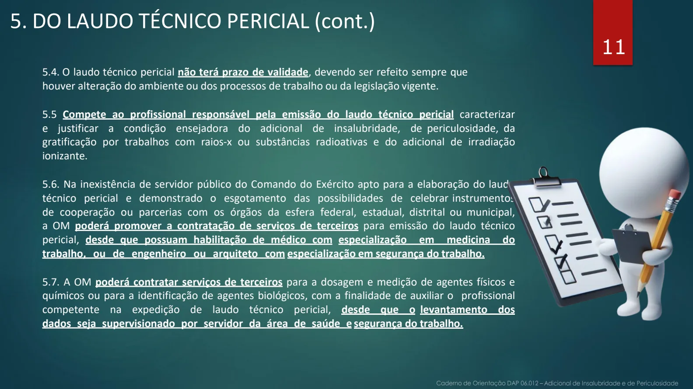
Laudo técnico pericial
PDF · p. 125. DO LAUDO TÉCNICO PERICIAL (cont.)
5.8. É admitido o laudo técnico emitido em data anterior ou posterior ao exercício da
atividade pelo segurado, se não houve alteração no ambiente de trabalho ou em sua
organização, desde que haja ratificação, nesse sentido, por servidor público da esfera
federal, estadual, distrital ou municipal, ou militar, ocupante de cargo público ou posto
militar de médico com especialização em medicina do trabalho, ou de engenheiro ou
de arquiteto com especialização em segurança do trabalho.
EXIGÊNCIA DO LAUDO TÉCNICO PERICIAL
TIPO DE EXPOSIÇÃO OBRIGATORIEDADEDO LAUDO
Agente físico ruído Apresentação obrigatória para qualquer época
da prestação do labor
Demais agentes nocivos Apresentação obrigatória a partir de 14 de
outubro de 1996
Ver página original — tabelas, imagens e diagramas
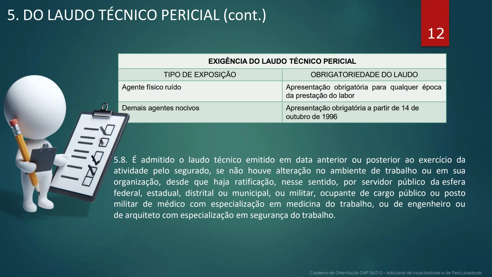
Laudo técnico pericial
PDF · p. 135. DO LAUDO TÉCNICO PERICIAL (cont.)
5.9. Não serão aceitos:
a) laudo relativo à atividade diversa, salvo quando efetuada no mesmo órgão público;
b) laudo relativo a órgão público ou equipamento diversos, ainda que as funções sejam
similares; e
c) laudo realizado em localidade diversa daquela em que houve o exercício da
atividade.
Ver página original — tabelas, imagens e diagramas
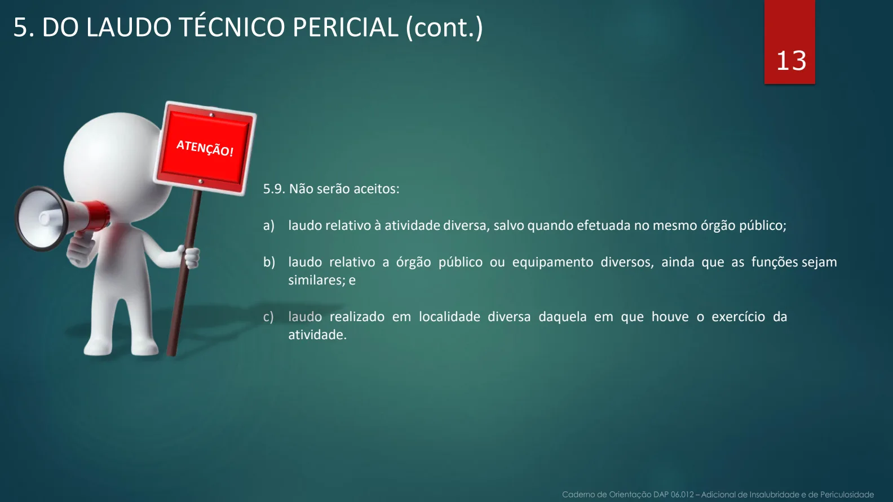
Laudo técnico pericial
PDF · p. 145. DO LAUDO TÉCNICO PERICIAL (cont.)
5.10. Poderão ser aceitos em substituição ao laudo técnico pericial, ou ainda de forma complementar a este, os seguintes
documentos:
a) laudos técnico-periciais emitidos por determinação da Justiça do Trabalho, em ações trabalhistas, acordos ou dissídios coletivos;
b) laudos emitidos pela Fundacentro;
c) laudos emitidos pelo ministério competente, ou, ainda, pelas Delegacias Regionais do Trabalho - DRT;
d) laudos individuais acompanhados de:
• autorização escrita do órgão administrativo competente, se o levantamento ambiental ficar a cargo de responsável técnico
não integrante do quadro funcional da respectiva Administração;
• cópia do documento de habilitação profissional do engenheiro de segurança do trabalho ou médico do trabalho, indicando
sua especialidade;
• nome e identificação do servidor da Administração responsável pelo acompanhamento do levantamento ambiental, quando a
emissão do laudo ficar a cargo de profissional não pertencente ao quadro de pessoal do órgão ou da entidade; e
• data e local da realização da perícia; e
e) demonstrações ambientais constantes dos seguintes documentos:
• Programa de Prevenção de Riscos Ambientais - PPRA;
• Programa de Gerenciamento de Riscos - PGR;
• Programa de Condições e Meio Ambiente de Trabalho na Indústria da Construção - PCMAT; e
• Programa de Controle Médico de Saúde Ocupacional - PCMSO.
Ver página original — tabelas, imagens e diagramas
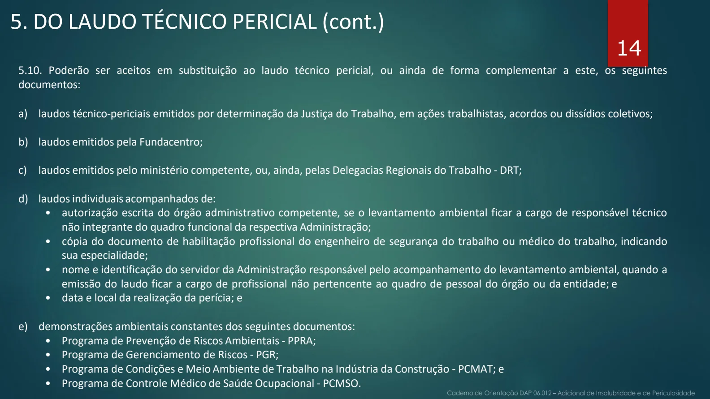
Pagamento
PDF · p. 156. DO PAGAMENTO
6.1. A execução do pagamento somente será processada à vista de
portaria de localização ou de exercício do servidor e de portaria de
concessão do adicional, bem assim de laudo técnico pericial, cabendo à
autoridade pagadora conferir a exatidão destes documentos antes de
autorizar o pagamento.
6.2. Consideram-se como de efetivo exercício,
pagamento dos adicionais de insalubridade
para o
e de
periculosidade, os afastamentos nas situações previstas no item
4.11 do tópico “Informações Gerais”, deste caderno (página 8).
Ver página original — tabelas, imagens e diagramas
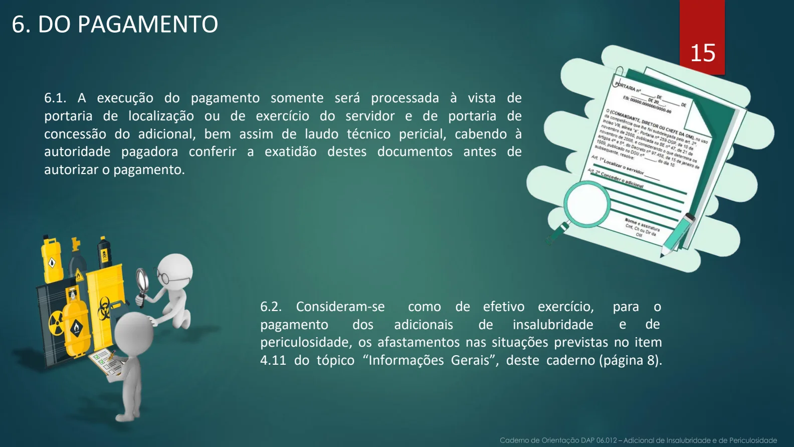
Pagamento
PDF · p. 166. DO PAGAMENTO(cont.)
6.3. Os servidores civis da União, das autarquias e das fundações públicas federais
perceberão adicionais de insalubridade e de periculosidade, nos termos das normas legais e
regulamentares pertinentes aos trabalhadores em geral e calculados com base nos
seguintes percentuais:
a) 20% (vinte por cento), para insalubridade de grau máximo;
b) 10% (dez por cento), para insalubridade de grau médio;
c) 5% (cinco por cento), para insalubridade de grau mínimo.
6.5. No caso de incidência de mais de um fator de insalubridade, será apenas considerado o de grau mais
elevado, para efeito de acréscimo salarial, sendo vedada a percepção cumulativa.
6.6. A eliminação ou neutralização da insalubridade ficará caracterizada através de avaliação pericial por
órgão competente, que comprove a inexistência de risco à saúde do trabalhador.
6.7. A eliminação ou neutralização da insalubridade determinará a cessação do pagamento do adicional
respectivo.
6.8. A eliminação ou neutralização da insalubridade deverá ocorrer:
a) com a adoção de medidas de ordem geral que conservem o ambiente de trabalho dentro dos limites
de tolerância;
b) com a utilização de equipamento de proteção individual.
Ver página original — tabelas, imagens e diagramas
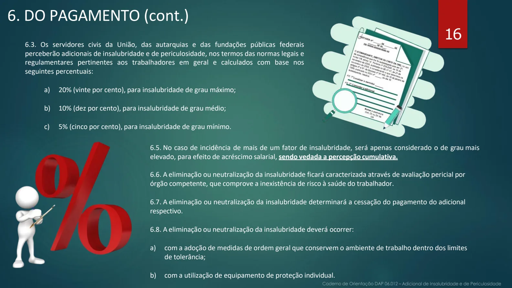
Pagamento
PDF · p. 176. DO PAGAMENTO(cont.)
6.9. O exercício de trabalho em condições de periculosidade assegura ao trabalhador a percepção de adicional
de 10% (dez por cento), incidente sobre o salário, sem os acréscimos resultantes de gratificações,
prêmios ou participação nos lucros da empresa.
6.10. O empregado poderá optar pelo adicional de insalubridade que porventura lhe seja devido.
Insalubridade e periculosidade: diferenças
PDF · p. 187. INSALUBRIDADE x PERICULOSIDADE
QUAIS AS DIFERENÇAS?
INSALUBRIDADE PERICULOSIDADE
Exposição a atividades que afetam a saúde do servidor Exposição a atividades que oferecem risco de vida ao
servidor
• Ruído
• Vibração
• Calor
• Frio
• Umidade
• Agentes biológicos
• Agentes químicos
• Condições hiperbáricas
• Radiação ionizante/não ionizante
• Explosivos
• Inflamáveis
• Energia elétrica
• Substâncias radioativas
• Segurança patrimonial e pessoal
ADICIONAL POR EXPOSIÇÃO
Calculado sobre o vencimento do servidor
5% grau mínimo
10% grau médio
20% grau máximo
10%
Ver página original — tabelas, imagens e diagramas
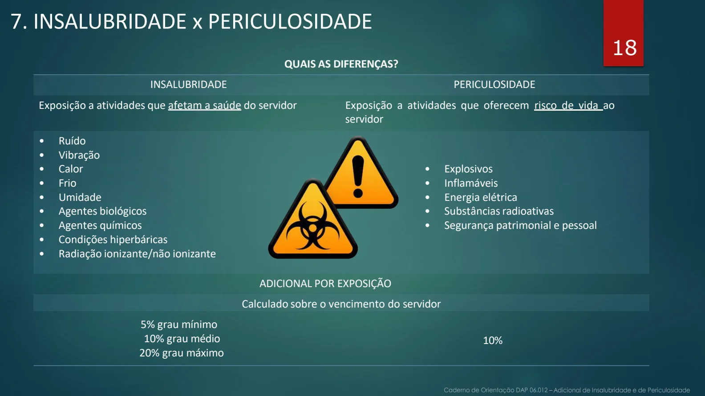
Documentos necessários
PDF · p. 198. DOCUMENTOS NECESSÁRIOS
PARA CONCESSÃO
DOCUMENTO RESPONSÁVEL PELA
ELABORAÇÃO/EMISSÃO/FORNECIMENTO ONDE ENCONTRAR MODELO?
Laudo técnico pericial para concessão de
adicional de insalubridade ou periculosidade. -
Elaborado por servidor público da esfera federal, estadual,
distrital ou municipal, ou militar, ocupante de cargo público ou
posto militar de médico com especialização em medicina do
trabalho, ou de engenheiro ou de arquiteto com especialização
em segurança do trabalho.
Portaria de localização ou de exercício do
servidor e concessão de adicional de insalubridade
OM
Anexo A
Portaria de localização ou de exercício do servidor,
de concessão do adicional de periculosidade e de
designação de servidor para exercer atividade em área
perigosa
Anexo B
Quadro demonstrativo de concessões, reduções
ou cancelamento de adicionais de
insalubridade ou periculosidade.
Anexo C
Portaria de cancelamento do adicional de
periculosidade ou insalubridade Anexo D
Portaria de redução do percentual do
adicional de insalubridade Anexo E
Ver página original — tabelas, imagens e diagramas
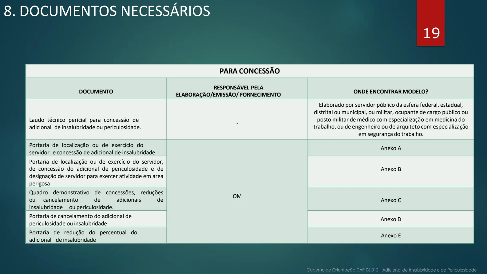
Documentos necessários
PDF · p. 208. DOCUMENTOS NECESSÁRIOS (cont.)
Os servidores públicos federais que exerceram atividades em condições especiais
prejudiciais à saúde ou à integridade física, até o dia 13 de novembro de 2019, poderão ter esse
tempo convertido em tempo comum para fins de aposentadoria e contagem recíproca de
tempo de contribuição.
É necessária a instrução de um processo administrativo individualizado que contenha o laudo
técnico pericial e as portarias necessárias à concessão, além dos seguintes documentos:
PARAFINS DE CONVERSÃO DE TEMPO ESPECIAL EM COMUM*
DOCUMENTO RESPONSÁVEL PELA
ELABORAÇÃO/EMISSÃO/ FORNECIMENTO ONDE ENCONTRAR MODELO?
Documento de comprovação de efetiva
exposição a agentes prejudiciais à saúde OM
Quando emitidos até 31 de dezembro de 2003:
Modelo de documento instituído para o RGPS,
segundo seu
período de vigência, sob as siglas SB-40, DISESBE
5235, DSS-8030 ou DIRBEN 8030, que serão
aceitos, quando emitidos até 31 de dezembro de
2003; ou
Perfil Profissiográfico Previdenciário – PPP (formulário
exigido a partir de 1º de janeiro de 2004 –
Anexo F (O Anexo G refere-se às instruções de
preenchimento do PPP)
Parecer da Perícia Médica
OM
Sem modelo específico, porém deve descrever o
enquadramento por agente nocivo, indicando a
codificação prevista na legislação específica e o
correspondente período de atividade.*A tramitação e os detalhes do processo de conversão são tratados no Caderno de Orientaçãoespecíficosobre o assunto.
Ver página original — tabelas, imagens e diagramas
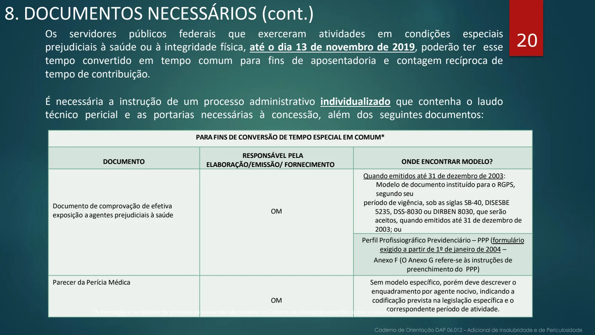
Tramitação
PDF · p. 21Não havendo
médico apto ou
disponívelà
elaboração do
laudo técnico
pericial,a OM
deverá solicitara
outrosórgãos,
federal,estadual
ou municipal,
existentena
guarnição a
indicação de um
médico com
formação em
medicina do
trabalho ou
engenheiro ou
arquiteto
especializado em
segurança do
trabalho para a
realização da
perícia.
21
9. TRAMITAÇÃO
Definir as áreas insalubres
Solicitar ao hospital da guarnição a indicação de um médico com formação em medicina do trabalho
para realizar a perícia no local supostamente considerado como insalubre ou perigoso e expedir o
respectivo laudo técnico pericial.
Indicar ao perito as áreas a serem examinadas, supostamente consideradas insalubres ou
perigosas.
Elaborar e publicar as portarias de localização ou exercício do servidor, da concessão, da redução
ou do cancelamento dos adicionais de insalubridade ou periculosidade.
Encaminhar à DAP o processo administrativo instruído com o laudo técnico pericial, o quadro
demonstrativo (Anexo E) e as portarias expedidas e publicadas.
Solicitar ao CPEX a implantação do adicional na folha de pagamento.
OM
Ver página original — tabelas, imagens e diagramas
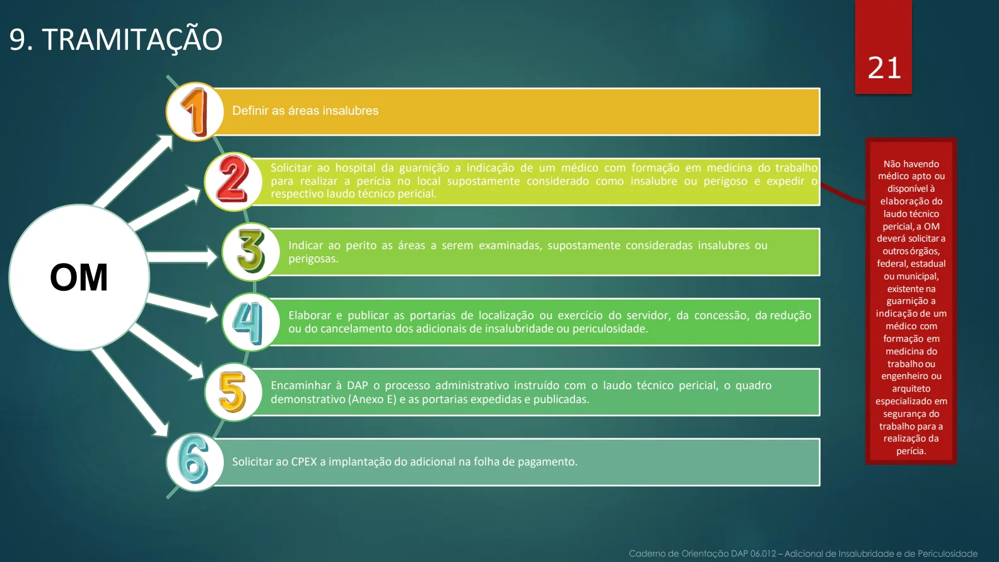
Fontes e elaboração
PDF · p. 22ELABORAÇÃO:
ASSESSORIA TÉCNICA DA SPC/DAP
SUBSEÇÃO DE BENEFÍCIOS DA SPC/DAP
AGOSTO DE 2024
Para conhecer melhor o assunto, leia as
legislações indicadas no início deste caderno, disponíveis no link:
https://legis.sigepe.gov.br/legis/pesquisa-avancada
Ver página original — tabelas, imagens e diagramas
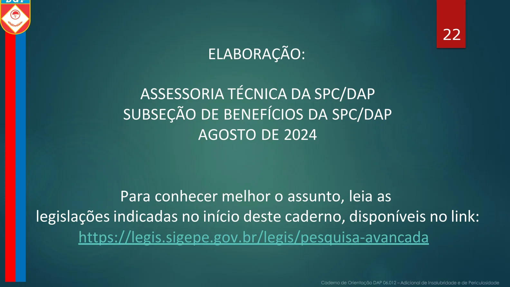
Anexos e portarias
PDF · p. 23ANEXO A
Portaria de localização ou de exercício do servidor e concessão de adicional de insalubridade
MINISTÉRIO DA DEFESA
EXÉRCITO BRASILEIRO
(escalões hierárquicos até a OM expedidora)
(Denominação histórica)
PORTARIA nº ______, DE ________ DE _______ DE 20___.
EB: 00000.000000/0000 - 00
O (COMANDANTE, DIRETOR OU CHEFE DA OM), no uso da competência que lhe foi
subdelegada pelo art. 2º, inciso X, da Portaria - DGP/C Ex nº 458, de 10 de agosto de 2023, publicada no
BE nº 33, de 18 de agosto de 2023, e considerando o que determina os artigos 4º e 5º, do Decreto nº
97.458, de 15 de janeiro de 1989, resolve:
Art. 1º Localizar o(s) servidor (es) _________________________________ para exercer
(em) suas atribuições na (o) (seção, setor, etc.), considerada (o) insalubre, conforme Laudo Técnico Pericial
nº __________, de _____ de _______________ de 20___.
Art. 2º Conceder - lhe (s) o adicional de insalubridade no percentual de (5%, 10% ou 20%),
correspondente ao grau (mínimo, médio ou máximo), incidente sobre o vencimento básico.
Art. 3º Determinar que esta portaria entre em vigor na data de sua publicação.
Nome e assinatura Cmt, Ch ou Dir da OM
Ver página original — tabelas, imagens e diagramas
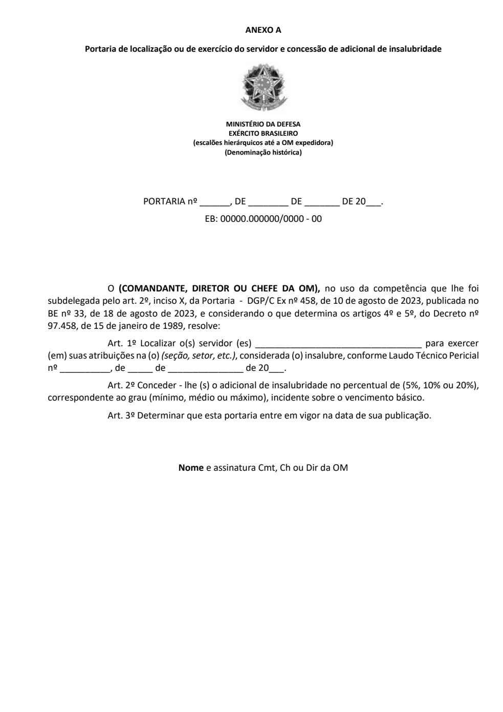
Anexos e portarias
PDF · p. 24ANEXO B
Portaria de localização ou de exercício do servidor, de concessão do adicional de periculosidade e de
designação de servidor para exercer atividade em área perigosa
MINISTÉRIO DA DEFESA
EXÉRCITO BRASILEIRO
(escalões hierárquicos até a OM expedidora)
(Denominação histórica)
PORTARIA nº ______, DE ________ DE _______ DE 20___.
EB: 00000.000000/0000 - 00
O (COMANDANTE, DIRETOR OU CHEFE DA OM), no uso da competência que lhe foi
subdelegada pelo art. 2º, inciso X, da Portaria - DGP/C Ex nº 458, de 10 de agosto de 2023, publicada no
BE nº 33, de 18 de agosto de 2023, e considerando o que determina os artigos 4º e 5º, do Decreto nº
97.458, de 15 de janeiro de 1989, resolve:
Art. 1º Localizar e designar o(s) servidor (es) ______________________________________
para exercer(em) suas atribuições na(o) (seção, setor, etc.) , considerada(o) de risco, conforme Laudo
Pericial nº __________, de _____ de _______________ de 20___, sem prejuízo de outras atribuições.
Art. 2º Conceder - lhe(s) o adicional de periculosidade , no percentual de 10% (dez por
cento), incidente sobre o respectivo vencimento básico.
Art. 3º Determinar que esta portaria entre em vigor na data de sua publicação.
Nome e assinatura Cmt, Ch ou Dir da OM
Ver página original — tabelas, imagens e diagramas
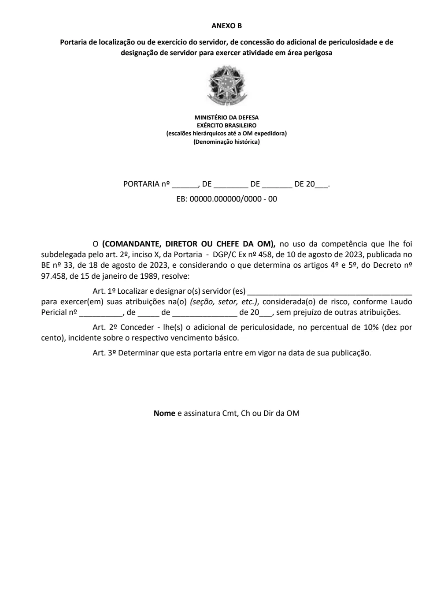
Anexos e portarias
PDF · p. 25ANEXO C
Quadro demonstrativo de concessões, reduções ou cancelamento de adicionais de insalubridade ou
periculosidade.
MINISTÉRIO DA DEFESA
EXÉRCITO BRASILEIRO
(escalões hierárquicos até a OM expedidora)
(Denominação histórica)
OM:_________________________________________________________________________________
Nome Matrícula
SIAPE
Tipo de
adicional
Efeitos Financeiros
Data Concessão Redução Cancelamento
(Local e data)
___________________________________
Nome e assinatura Cmt, Ch ou Dir da OM
Ver página original — tabelas, imagens e diagramas
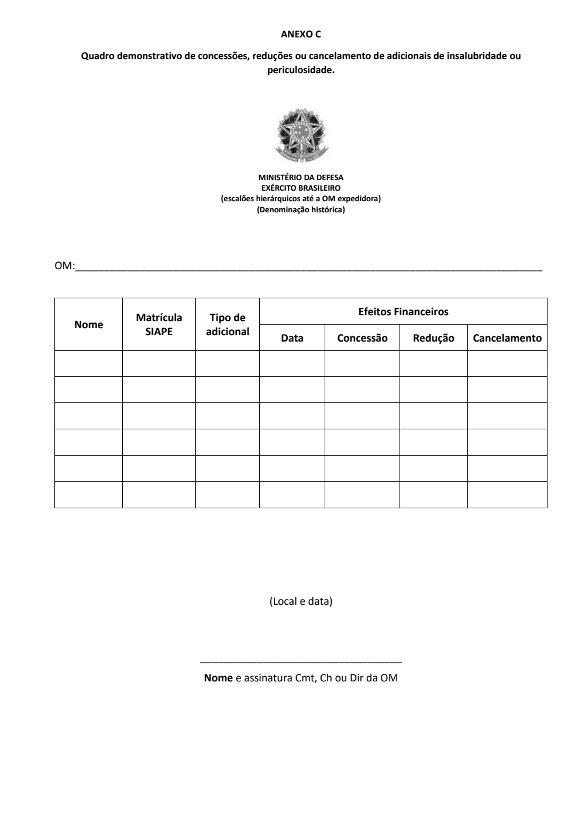
Anexos e portarias
PDF · p. 26ANEXO D
Portaria de Cancelamento do Adicional de Periculosidade ou Insalubridade
MINISTÉRIO DA DEFESA
EXÉRCITO BRASILEIRO
(escalões hierárquicos até a OM expedidora)
(Denominação histórica)
PORTARIA nº ______, DE _________ DE ___________ DE 20___.
EB: 00000.000000/0000 - 00
O (COMANDANTE, DIRETOR OU CHEFE DA OM), no uso da competência que lhe foi
subdelegada pelo art. 2º, inciso X, da Portaria - DGP/C Ex nº 458, de 10 de agosto de 2023, publicada no
BE nº 33, de 18 de agosto de 2023, e considerando o que determina Instrução Normativa SGP/SEGGG /ME
nº 15, de 16 de março de 2022, resolve:
Art. 1º Cancelar a concessão do adicional de (insalubridade ou periculosidade) do(s)
servidor (es) _______________________________________________________________, uma vez que
não mais se encontra(m) exercendo suas atividades em área considerada (insalubre ou de risco).
Art. 2º Determinar que esta portaria entre em vigor na data de sua publicação.
Nome e assinatura Cmt, Ch ou Dir da OM
Ver página original — tabelas, imagens e diagramas
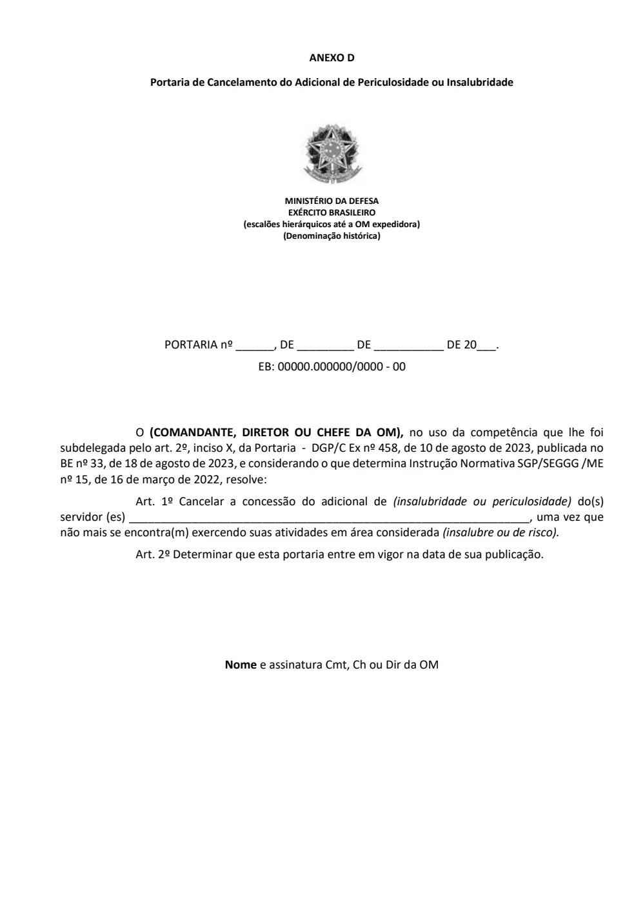
Anexos e portarias
PDF · p. 27ANEXO E
Portaria de Redução do Percentual do Adicional de Insalubridade
MINISTÉRIO DA DEFESA
EXÉRCITO BRASILEIRO
(escalões hierárquicos até a OM expedidora)
(Denominação histórica)
PORTARIA nº ______, DE _________ DE ___________ DE 20___.
EB: 00000.000000/0000 - 00
O (COMANDANTE, DIRETOR OU CHEFE DA OM), no uso da competência que lhe foi
subdelegada pelo art. 2º, inciso X, da Portaria - DGP/C Ex nº 458, de 10 de agosto de 2023, publicada no
BE nº 33, de 18 de agosto de 2023, e considerando o que determina Instrução Normativa SGP/SEGGG /ME
nº 15, de 16 de março de 2022, resolve:
Art. 1º Reduzir o percentual do adicional de insalubridade do(s) servidor (es)
_______________________________________________________________, para ______%, tendo em
vista a diminuição dos fatores que o ocasionaram, conforme consta do Laudo Pericial nº __________, de
___ de _______________de 20___.
Art. 2º Determinar que esta portaria entre em vigor na data de sua publicação.
Nome e assinatura Cmt, Ch ou Dir da OM
Ver página original — tabelas, imagens e diagramas
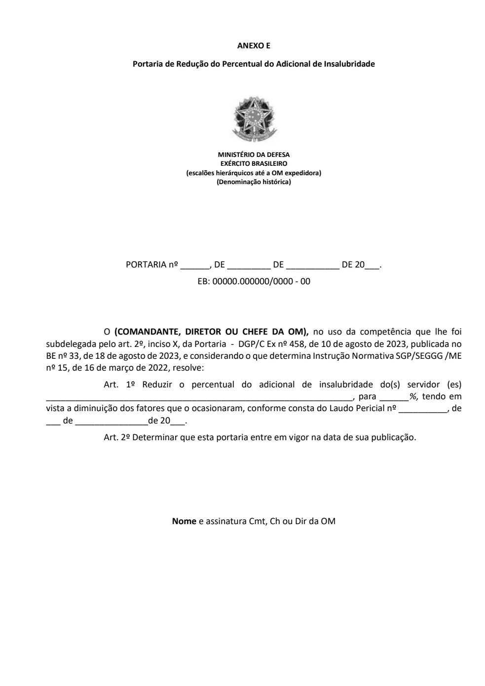
Perfil Profissiográfico Previdenciário — PPP
PDF · p. 28Anexo F
Perfil Profissiográfico Previdenciário - PPP
MINISTÉRIO DA DEFESA
EXÉRCITO BRASILEIRO
(escalões hierárquicos até a OM expedidora)
(Denominação histórica)
PERFIL PROFISSIOGRÁFICO PREVIDENCIÁRIO - PPP
DADOS ADMINISTRATIVOS
1- CNPJ do Domicílio
Tributário/CEI/CAEPF/CNO: 2- Nome Empresarial: 3- CNAE:
4- Nome do trabalhador: 5- BR/PDH 6- CPF
7- Data de Nascimento:
8- Sexo (F/M/Outros): 9- Matrícula
do
Trabalhador
no eSocial:
10- Data de
admissão:
11- Regime Revezamento:
12- CAT REGISTRADA
12.1 - Data do Registro: 12.1 - Data do Registro: 12.1 - Data do Registro: 12.1 - Data do Registro:
Ver página original — tabelas, imagens e diagramas
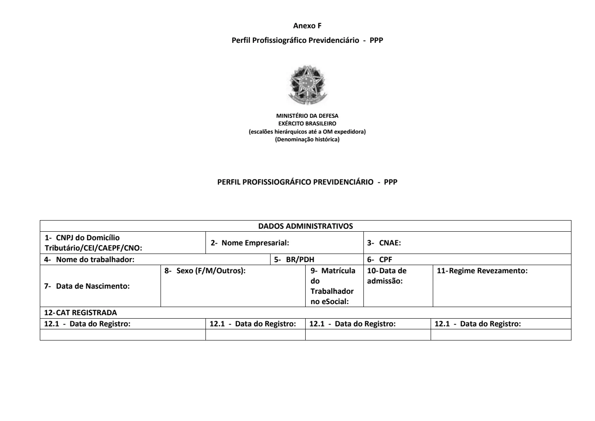
Perfil Profissiográfico Previdenciário — PPP
PDF · p. 2913- LOTAÇÃO E ATRIBUIÇÃO
13.1 - Período 13.2 -
CNPJ/CEI/CAEPF/CNO
13.3 -
Setor
13.4 -
Cargo
13.5 -
Função
13.6 -
CBO
13.7 - Código
GFIP/eSocial
___/____/____a____/____/___
___/____/____a____/____/___
___/____/____a____/____/___
___/____/____a____/____/___
___/____/____a____/____/___
___/____/____a____/____/___
14- PROFISSIOGRAFIA
14.1 - Período 14.2 - Descrição das Atividades
___/____/____a____/____/___
___/____/____a____/____/___
___/____/____a____/____/___
___/____/____a____/____/___
___/____/____a____/____/___
___/____/____a____/____/___
Ver página original — tabelas, imagens e diagramas
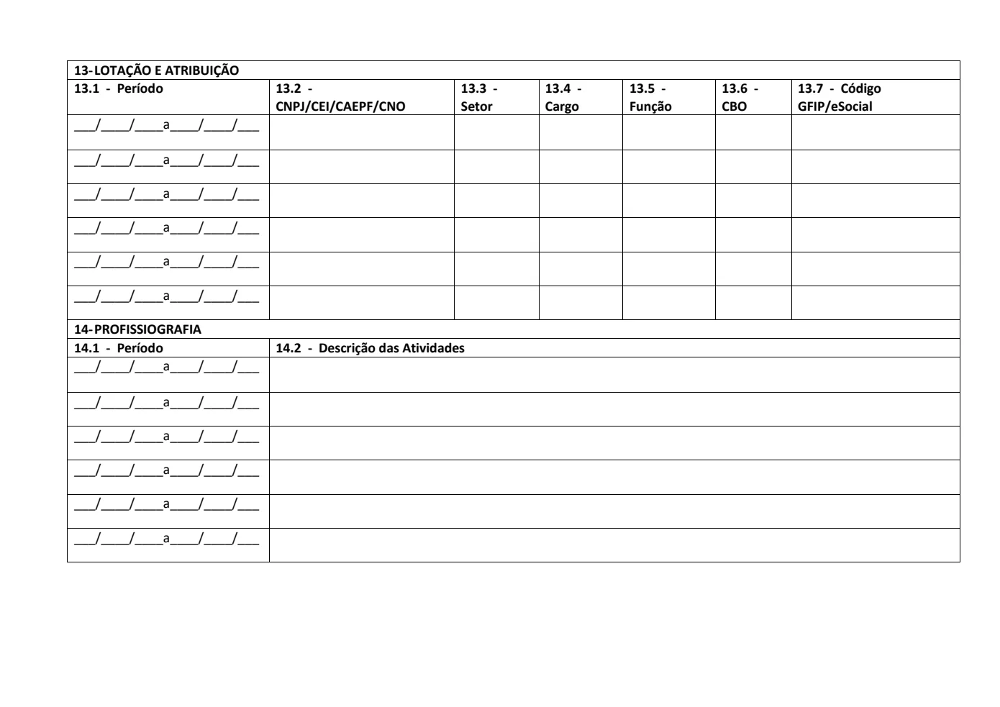
Perfil Profissiográfico Previdenciário — PPP
PDF · p. 30REGISTROS AMBIENTAIS
15- EXPOSIÇÃO A FATORES DE RISCOS
15.1 - Período 15. 2 -
Tipo
15.3 -
Fator de
Risco
15.4 -
Intensidade/
Concentração
15.5 -
Técnica
Utilizada
15.7 - EPI
Eficaz (S/N)
15.8 -
CA EPI
15.9 - Atendimento aos requisitos das NR - 06 e NR - 01 do MTP pelos EPIs informados (*)
Medida de
Proteção
Condição de
Funcionamento
do EPI
Prazo de
Validade do EPI
Periodicidade
da Troca do
EPI
Higienização do EPI
___/____/____a
____/____/___
___/____/____a
____/____/___
___/____/____a
____/____/___
___/____/____a
____/____/___
___/____/____a
____/____/___
___/____/____a
____/____/___
* Legenda do item 15.9:
Medida de Proteção: Foi tentada a implementação de medidas de proteção coletiva, de caráter administrativo ou de organização do trabalho, optando
- se pelo Equipamento de Proteção Individual - EPI por inviabilidade técnica, insuficiência ou interinidade, ou ainda em caráter complementar ou
emergencial?
Condição de Funcionamento do EPI : Foram observadas as condições de funcionamento e do uso ininterrupto do EPI ao longo do tempo, conforme
especificação técnica do fabricante, ajustada às condições?
Prazo de Validade do EPI: Foi observado o prazo de validade, conforme Certificado de Aprovação - CA do MTP?
Periocidade da Troca do EPI: Foi observada a periodicidade de troca definida pelos programas ambientais, comprovada mediante recibo assinado pelo
usuário em época própria?
Higienização do EPI: Foi observada a higienização?
Ver página original — tabelas, imagens e diagramas
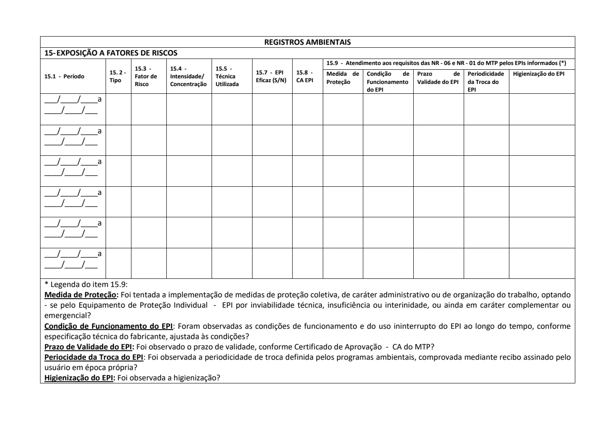
Perfil Profissiográfico Previdenciário — PPP
PDF · p. 3116- RESPONSÁVEL PELOS REGISTROS AMBIENTAIS
16.1 - Período 16.2 - CPF: 16.3 - Registro em Conselho de Classe 16.4 - Nome do profissional legalmente
habilitado
___/____/____a____/____/___
___/____/____a____/____/___
___/____/____a____/____/___
___/____/____a____/____/___
___/____/____a____/____/___
RESPONSÁVEIS PELAS INFORMAÇÕES
Declaramos, para todos fins de direito, que as informações prestadas neste documento são verídicas e foram transcritas fielme nte dos registros
administrativos, das demonstrações ambientais e dos programas médicos de responsabilidade da empresa. É de nosso conhecimento que a prestação de
informações falsas neste documento constitui crime de falsificação de documento público, nos termos do art. 297 do Código Pen al e, também, que tais
informações são de caráter privativo do trabalhador, con stituindo crime, nos termos da Lei nº 9.029, de 13 de abril de 1995, práticas discriminatórias
decorrentes de sua exigibilidade por outrem, bem como de sua divulgação para terceiros, ressalvado quando exigida pelos órgãos públicos competentes.
17- Data da Emissão do PPP 18 - Representante Legal da Empresa
___/____/____
18.1 - NIT do Representante Legal 18.2 - Nome do Representante Legal
(Carimbo da empresa)
__________________________________
(Assinatura física ou eletrônica)
OBSERVAÇÕES
Ver página original — tabelas, imagens e diagramas
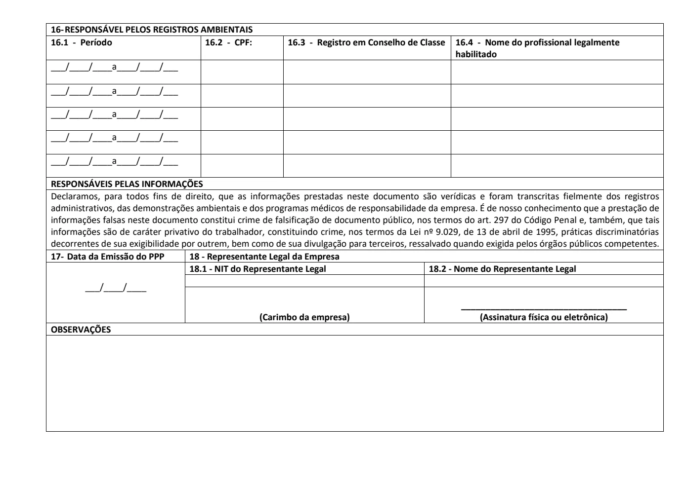
Instruções de preenchimento do PPP
PDF · p. 32Anexo G
Instruções de Preenchimento do PPP
CAMPO DESCRIÇÃO INSTRUÇÃO DE PREENCHIMENTO
DADOS ADMINISTRATIVOS
1
CNPJ do Domicílio
Tributário/ CEI/
CAEPF/CNO
CNPJ relativo ao estabelecimento escolhido como domicílio tributário,
nos termos do art. 127 do CTN, no formato XXXXXXXX/XXXX-XX; ou
Matrícula no Cadastro Específico do INSS (Matrícula CEI) relativa à obra
realizada por Contribuinte Individual ou ao estabelecimento escolhido
como domicílio tributário que não possua CNPJ, no formato
XX.XXX.XXXXX/XX, ambos compostos por caracteres numéricos; ou
Cadastro das Atividades Econômicas das Pessoas Físicas (CAEPF) ou
Cadastro Nacional de Obras (CNO) do empregador no forma to,
respectivamente, XXX.XXX.XXX/XXX-XX e XX.XXX.XXXXX/XX.
Quando da implantação do PPP em meio eletrônico, o campo
apresentará o CNPJ raiz no formato XX.XXX.XXX ou o CPF do
empregador com o qual o vínculo está estabelecido.
2 NOME EMPRESARIAL Até quarenta caracteres alfanuméricos.
3 CNAE
Classificação Nacional de Atividades Econômicas da Empresa - CNAE,
completo, com sete caracteres numéricos, no formato XXXXXX -X,
instituído pelo IBGE por meio da Resolução CONCLA nº 07, de 16 de
dezembro de 2002. A tabela de códigos CNAE - Fiscal pode ser
consultada na internet, no site www.cnae.ibge.gov.br
4 NOME DO
TRABALHADOR Até quarenta caracteres alfabéticos.
5 BR/PDH
BR - Beneficiário Reabilitado; PDH - Portador de Deficiência Habilitado;
NA - Não Aplicável.
Preencher com base no art. 93 da Lei nº 8.213, de 1991, que estabelece
a obrigatoriedade do preenchimento dos cargos de empresas com cem
ou mais empregados com beneficiários reabilitados ou pessoas
portadoras de deficiência, habilitadas, na seguinte proporção:
I - até 200 empregados 2%;
II - de 201 a 500 3%;
III - de 501 a 1.000 4%;
IV - de 1.001 em diante 5%.
Ver página original — tabelas, imagens e diagramas
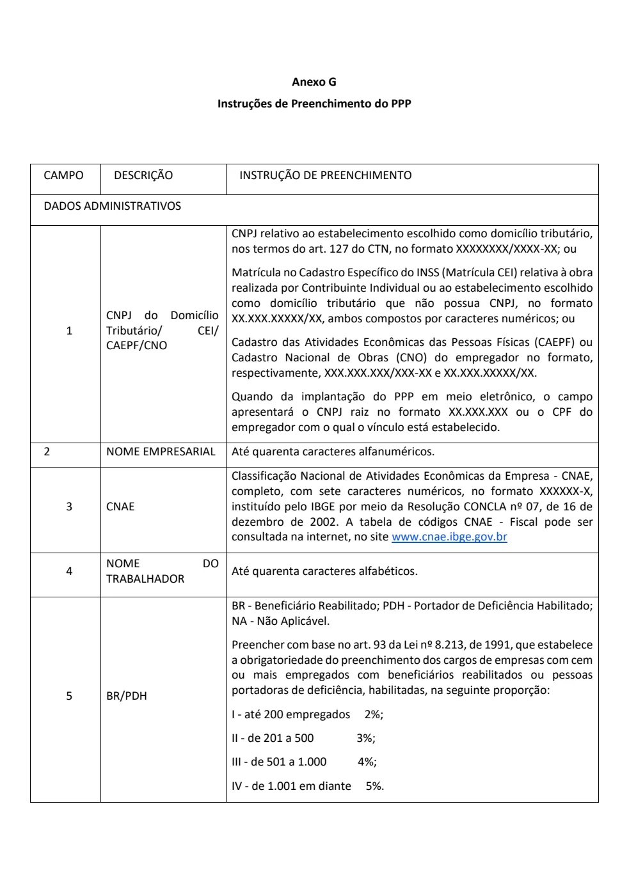
Instruções de preenchimento do PPP
PDF · p. 336 CPF Número de Cadastro da Pessoa Física com onze caracteres numéricos,
no formato XXX.XXX.XXX-XX.
7 DATA DO
NASCIMENTO No formato DD/MM/AAAA
8 SEXO (F/M) F - Feminino; M - Masculino
9
MATRÍCULA DO
TRABALHADOR NO
eSOCIAL
Número único composto pelo código da empresa e pelo número do
empregado.
10 DATA DE ADMISSÃO No formato DD/MM/AAAA
11 REGIME DE
REVEZAMENTO
Regime de Revezamento de Trabalho, para trabalhos em turnos ou
escala, especificando tempo trabalhado e tempo de descanso, com até
quinze caracteres alfanuméricos.
Exemplo: 24 x 72 horas; 14 x 21 dias; 2 x 1 meses. Se inexistente,
preencher com NA - Não Aplicável.
12 CAT REGISTRADA
Informações sobre as Comun icações de Acidente do Trabalho
registradas pela empresa na Previdência Social, nos termos do art. 22
da Lei nº 8.213, de 1991, do art. 169 da CLT, do art. 336 do RPS,
aprovado pelo Decreto nº 3.048, de 1999, do item 7.4.8, alínea "a", da
NR-07 do MTP e dos itens 4.3 e 6.1 do Anexo 13 -A da NR-15 do MTP,
disciplinado pela Portaria MPAS nº 5.051, de 1999, que aprova o
Manual de Instruções para Preenchimento da CAT.
12.1 DATA DO REGISTRO No formato DD/MM/AAAA.
12.2 NÚMERO DA CAT
Com treze caracteres numéricos, com formato XXXXXXXXXX-X/XX.
Os dois últimos caracteres correspondem a um número sequencial
relativo ao mesmo acidente, identificado por NIT, CNPJ e data do
acidente.
13 LOTAÇÃO E
ATRIBUIÇÃO
Informações sobre o histórico de lotação e atribuições do trabalhador,
por período.
A alteração de qualquer um dos campos - 13.2 a 13.7 - implica,
obrigatoriamente, a criação de nova linha, com discriminação do
período, repetindo as informações que não foram alteradas.
13.1 PERÍODO
Data de início e data de fim do período, ambas no formato
DD/MM/AAAA.
No caso de trabalhador ativo, a data de fim do último período não
deverá ser preenchida.
Ver página original — tabelas, imagens e diagramas
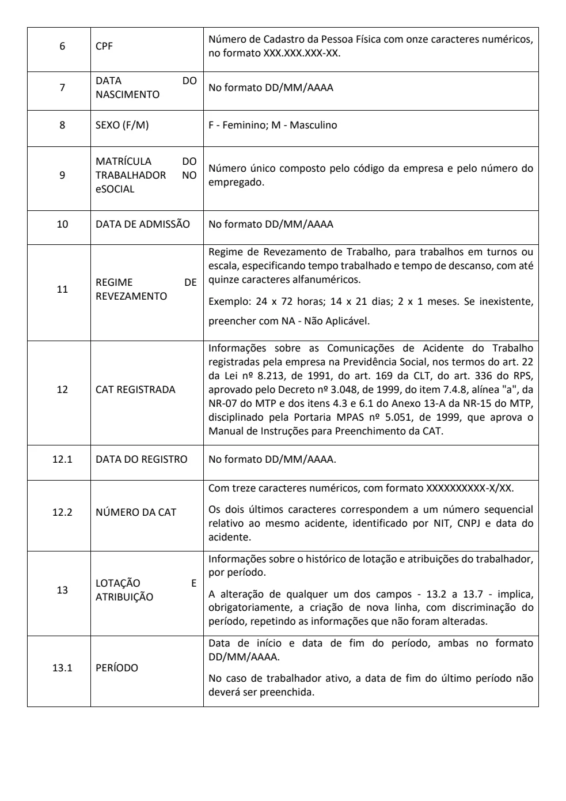
Instruções de preenchimento do PPP
PDF · p. 3413.2 CNPJ/CEI/CAEPF/CNO
Local onde efetivamente o trabalhador exerce suas atividades. Deverá
ser informado o CNPJ do estabelecimento de lotação do trabalhador
ou da empresa tomadora de serviços, no formato XXXXXXXX/XXXX -XX
ou Matrícula CEI da obra ou do estabelecimento que não possua CNPJ,
no formato XX.XXX.XXXXX/XX, ou o Cadastro das Atividades
Econômicas das Pessoas Físicas (CAEPF), no formato XXX.XXX.XXX/XXX-
XX ou o Cadastro Nacional de Obras (CNO) do empregador no formato
XX.XXX.XXXXX/XX.
13.3 SETOR
Lugar administrativo na estrutura organizacional da empresa, onde o
trabalhador exerce suas atividades laborais, com até quinze caracteres
alfanuméricos.
13.4 CARGO
Cargo do trabalhador, constante na CTPS, se empregado ou
trabalhador avulso, ou constante no Recibo de Produção e Livro de
Matrícula, se cooperado, com até trinta caracteres alfanuméricos.
13.5 FUNÇÃO
Lugar administrativo na estrutura organizacional da empresa, onde o
trabalhador tenha atribuição de comando, chefia, coordenação,
supervisão ou gerência. Quando inexistente a função, preencher com
NA - Não Aplicável, com até trinta caracteres alfanuméricos.
13.6 CBO
Classificação Brasileira de Ocupação - CBO vigente à época, com seis
caracteres numéricos:
1 - No caso de utilização da tabela CBO relativa a 1994, utilizar a CBO
completa com cinco caracteres.
2 - No caso de utilização da tabela CBO relativa a 2002, utilizar a
família do CBO com quatro caracteres, completando com “0” (zero) a
primeira posição.
A tabela de CBO pode ser consultada na internet, no site
http://cbo.maisemprego.mte.gov.br/cbosite/pages/home.jsf
OBS.: Após a alteração da GFIP, somente será aceita a CBO completa ,
com seis caracteres numéricos, conforme a nova tabela CBO relativa a
2002.
13.7
CÓDIGO DE
OCORRÊNCIA DA
GFIP/eSOCIAL
Código Ocorrência da GFIP para o trabalhador, com dois caracteres
numéricos, conforme Manual da GFIP para usuários do SEFIP.
14 PROFISSIOGRAFIA
Informações sobre a profissiografia do trabalhador, por período.
A alteração do campo 14.2 implica, obrigatoriamente, a criação de
nova linha, com discriminação do período.
14.1 PERÍODO
Data de início e data de fim do período, ambas no for mato
DD/MM/AAAA. No caso de trabalhador ativo, a data de fim do último
período não deverá ser preenchida.
Ver página original — tabelas, imagens e diagramas
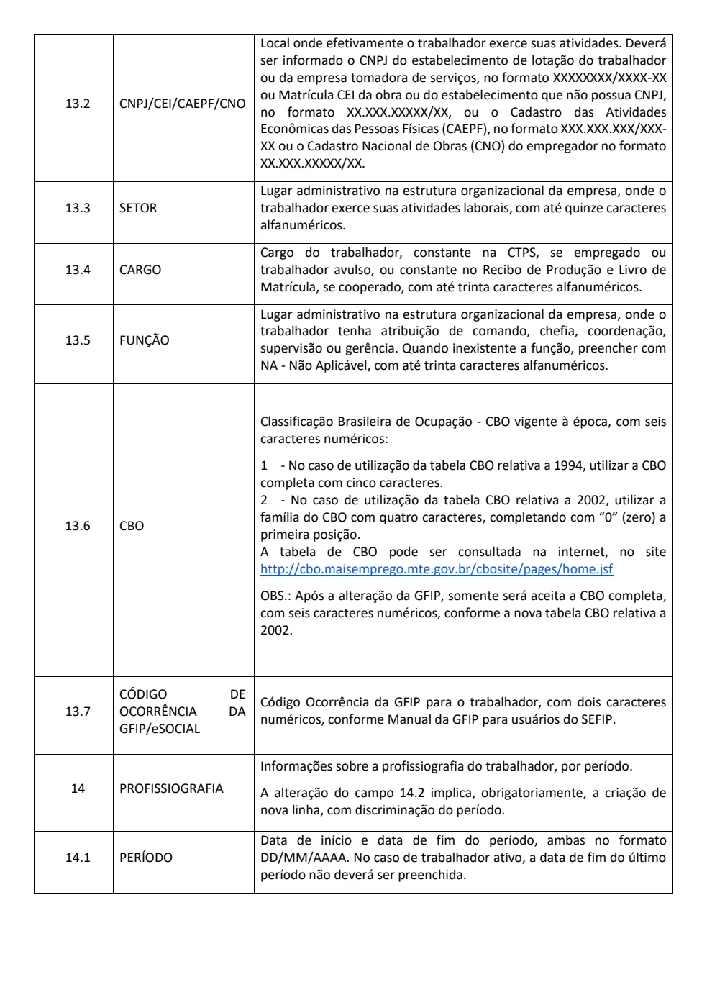
Instruções de preenchimento do PPP
PDF · p. 3514.2 DESCRIÇÃO DAS
ATIVIDADES
Descrição das atividades, físi cas ou mentais, realizadas pelo
trabalhador, por força do poder de co mando a que se submete, com
até quatrocentos caracteres alfanuméricos.
As atividades deverão ser descritas c om exatidão e de forma sucinta,
com a utilização de verbos no infinitivo impessoal.
REGISTROS AMBIENTAIS
15
EXPOSIÇÃO A
FATOR
ES DE RISCOS
Informações sobre a exposição do trabalhador a fatores de riscos
ambientais, por período, ainda que este jam neutralizados, atenuados
ou exista proteção eficaz.
Facultativamente, também poderão ser indicados os fatores de riscos
ergonômicos e mecânicos. A a lteração de qualquer um dos campos -
15.2 a 15.8 - implica, obrigatoriamente, a criação de nova linha, com
discriminação do período, repetindo as informações qu e não foram
alteradas.
OBS.: Após a implantação da mi gração dos dados do PPP em meio
magnético pela Previdência Social, as informações relativas aos fatores
de riscos ergonômicos e mecânicos passarão a ser obrigatórias.
15.1 PERÍODO
Data de início e data de fim do período, ambas no formato
DD/MM/AAAA. No caso de trabalhador ativo, a data de fim do último
período não deverá ser preenchida.
15.2 TIPO
F - Físico; Q - Químico; B - Biológico; E-Ergonômico/Psicossocial, M -
Mecânico/de Acidente, conforme classificação adotada pelo
Ministério da Saúde, em "Doenças Relacionadas ao Trabalho: Manual
de Procedimentos para os Serviços de Saúde", de 2001.
A indicação do Tipo "E" e "M" é facultativa.
O que determina a associação de agentes é a superposição de períodos
com fatores de risco diferentes.
15.3 FATOR DE RISCO
Descrição do fator de risco, com até quarenta caracteres
alfanuméricos.
Em se tratando do Tipo “Q”, deverá ser informado o nome da
substância ativa, não sendo aceitas citações de nomes comerciais.
15.4 INTENSIDADE /
CONCENTRAÇÃO
Intensidade ou Concentração, dependendo do tipo de agente, com até
quinze caracteres alfanuméricos.
Caso o fator de risco não seja passível de mensuração, preencher com
NA - Não Aplicável.
15.5 TÉCNICA UTILIZADA
Técnica utilizada para apuração do item 15.4, com até quarenta
caracteres alfanuméricos.
Caso o fator de risco não seja passível de mensuração, preencher com
NA - Não Aplicável.
Ver página original — tabelas, imagens e diagramas
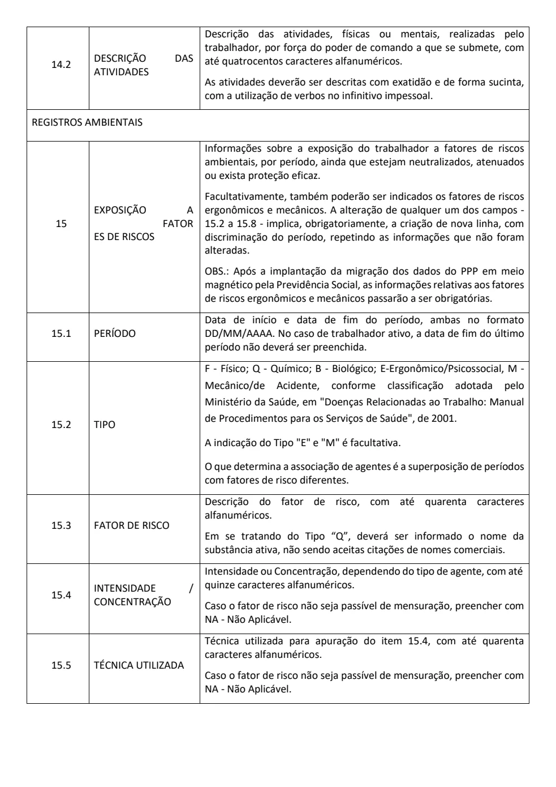
Instruções de preenchimento do PPP
PDF · p. 3615.6 EPC EFICAZ (S/N)
S - Sim; N - Não, considerando se houve ou não a eliminação ou a
neutralização, com base no informado nos itens 15.2 a 15.5,
asseguradas as condições de funcionamento do EPC ao longo do
tempo, conforme especificação técnica do fabricante e respectivo
plano de manutenção.
15.7 EPI EFICAZ (S/N)
S - Sim; N - Não, considerando se houve ou não a atenuação, com base
no informado nos itens 15.2 a 15.5, observado o disposto na NR-06 do
MTP, assegurada a observância:
1- da hierarquia estabelecida no item 1.5.5.1.2 da NR -01 do MTP
(medidas de proteção coletiva, medidas de caráter administrativo ou
de organização do trabalho e utilização de EPI, nesta ordem,
admitindo-se a utilização de EPI somente em situações de inviabilidade
técnica, insuficiência ou interinidade à implementação do EPC, ou
ainda em caráter complementar ou emergencial);
2- das condições de funcionamento do EPI ao longo do temp o,
conforme especificação técnica do fabricante, ajustada às condições
de campo;
3- do prazo de validade, conforme Certificado de Aprovação do
MTP;
4- da periodicidade de troca definida pelos programas ambientais,
devendo esta ser comprovada mediante recibo; e dos meios de
higienização.
15.8 C.A. EPI
Número do Certificado de Aprovação do MTP para o Equipamento de
Proteção Individual referido no campo 15.7, com cinco caracteres
numéricos.
Caso não seja utilizado EPI, preencher com NA - Não Aplicável.
15.9
ATENDIMENTO AOS
REQUISITOS DAS NR -
06 E NR -01 DO MTP
PELOS EPI
INFORMADOS
Observação do disposto na NR-06 do MTP, assegurada a observância:
1- da hierarquia estabelecida no item 1.5.5.1.2 da NR -01 do MTP
(medidas de proteção coletiva, medidas de caráter admini strativo ou
de organização do trabalho e utilização de EPI, nesta ordem,
admitindo-se a utilização de EPI somente em situações de inviabilidade
técnica, insuficiência ou interinidade à implementação do EPC, ou
ainda em caráter complementar ou emergencial);
2- das condições de funcionamento do EPI ao longo do tempo,
conforme especificação técnica do fabricante, ajustada às condições
de campo;
3- do prazo de validade, conforme Certificado de Aprovação do
MTP;
4- da periodicidade de troca definida pelos programas ambientais,
devendo esta ser comprovada mediante recibo; e dos meios de
higienização.
16
RESPONSÁVEL PELOS
REGISTROS
AMBIENTAIS
Informações sobre os responsáveis pelos registros ambientais, por
período.
16.1 PERÍODO
Data de início e data de fim do período, ambas no formato
DD/MM/AAAA. No caso de trabalhador ativo, sem alteração do
responsável, a data de fim do último período não deverá ser
preenchida.
Ver página original — tabelas, imagens e diagramas
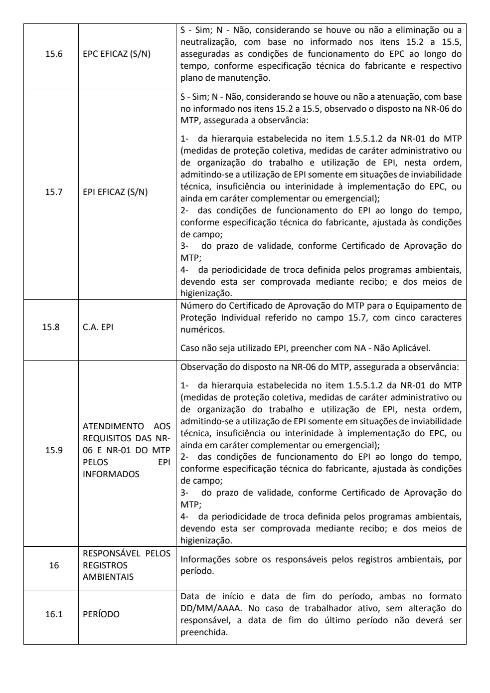
Instruções de preenchimento do PPP
PDF · p. 3716.2 CPF Número de Cadastro da Pessoa Física com onze caracteres numéricos,
no formato XXX.XXX.XXX-XX.
16.3 REGISTRO CONSELHO
DE CLASSE
Número do registro profissional no Conselho de Classe, com nove
caracteres alfanuméricos, no formato XXXXXX-X/XX ou XXXXXXX/XX.
A parte “-X” corresponde à D - Definitivo ou P - Provisório.
A parte “/XX” deve ser preenchida com a UF, com dois caracteres
alfabéticos.
A parte numérica deverá ser completada com zeros à esquerda.
16.4
NOME DO
PROFISSIONAL
LEGALMENTE
HABILITADO
Até quarenta caracteres alfabéticos.
RESPONSÁVEIS PELAS INFORMAÇÕES
17 DATA DE EMISSÃO
DO PPP
Data em que o PPP é impresso e assinado pelos responsáveis, no
formato DD/MM/AAAA.
18 REPRESENTANTE
LEGAL DA EMPRESA Informações sobre o Representante Legal da empresa.
18.1
NIT DO
REPRESENTANTE
LEGAL
NIT do representante legal da empresa com onze caracteres
numéricos, no formato XXX.XXXXX.XX-X.
O NIT corresponde ao número do PIS/PASEP/CI, sendo que, no caso de
CI, pode ser utilizado o número de inscrição no SUS ou na Previdência
Social.
18.2
NOME DO
REPRESENTANTE
LEGAL
Até quarenta caracteres alfabéticos.
CARIMBO DA
EMPRESA E
ASSINATURA DO
REPRESENTANTE
LEGAL
Carimbo da empresa e assinatura, física ou eletrônica, do
Representante Legal.
OBSERVAÇÕES
Devem ser incluídas neste campo informações necessárias à análise do PPP, bem como facilitadoras do
requerimento do benefício, como por exemplo: esclarecimento sobre alteração de razão social da
empresa, no caso de sucessora ou indicador de empresa pertencente a grupo econômico.
OBS.: É facultada a inclusão de informações complementares ou adicionais ao PPP.
Ver página original — tabelas, imagens e diagramas
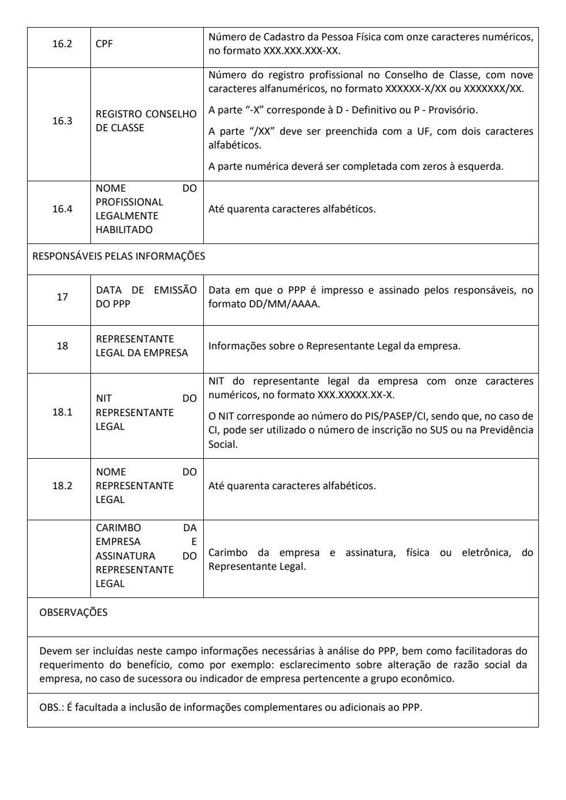